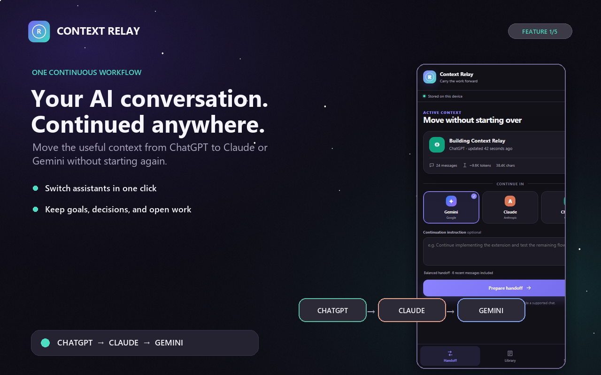
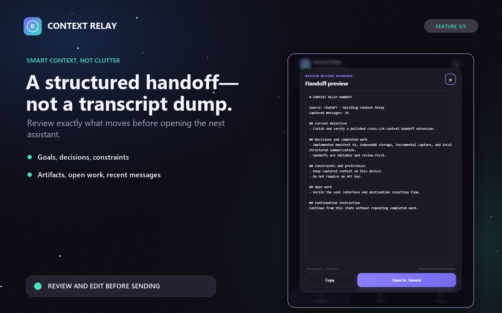

Trigger the relay
Type “continue with Gemini,” “continue with Claude,” or choose an assistant in the side panel.
Move the useful state of your conversation between ChatGPT, Claude, and Gemini—without explaining everything again.

01 / THE PROBLEM
Context Relay turns a long conversation into a compact, editable handoff—keeping the goal, decisions, constraints, completed work, and next steps intact.
02 / HOW IT WORKS
Type “continue with Gemini,” “continue with Claude,” or choose an assistant in the side panel.
Check and edit the structured context before anything moves. You stay in control.
Your selected assistant opens with the useful context ready for the next message.
03 / BUILT FOR REAL WORK
A clean handoff keeps the details that matter and leaves the noise behind.

04 / EVERYTHING YOU NEED
Move conversations with a phrase from the chat you are already using.
Continue across ChatGPT, Claude, and Gemini from one compact panel.
Search, reuse, pin, annotate, export, and back up past handoffs.
Handoff generation runs locally. No API key is required.
05 / PRIVACY BY DESIGN
Context Relay stores captured conversations and handoffs locally in your browser. It does not sell your information or use it for advertising.
Read the privacy policy ↗YOUR WORK. ANY ASSISTANT.